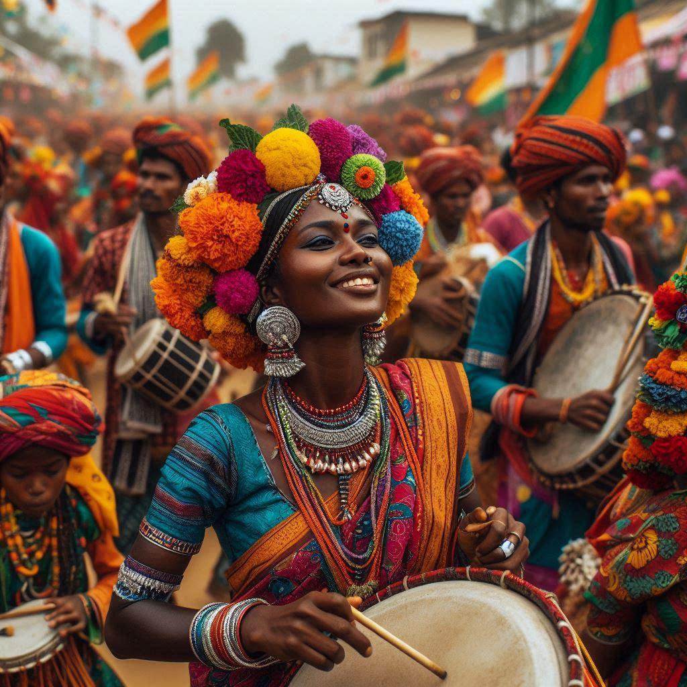
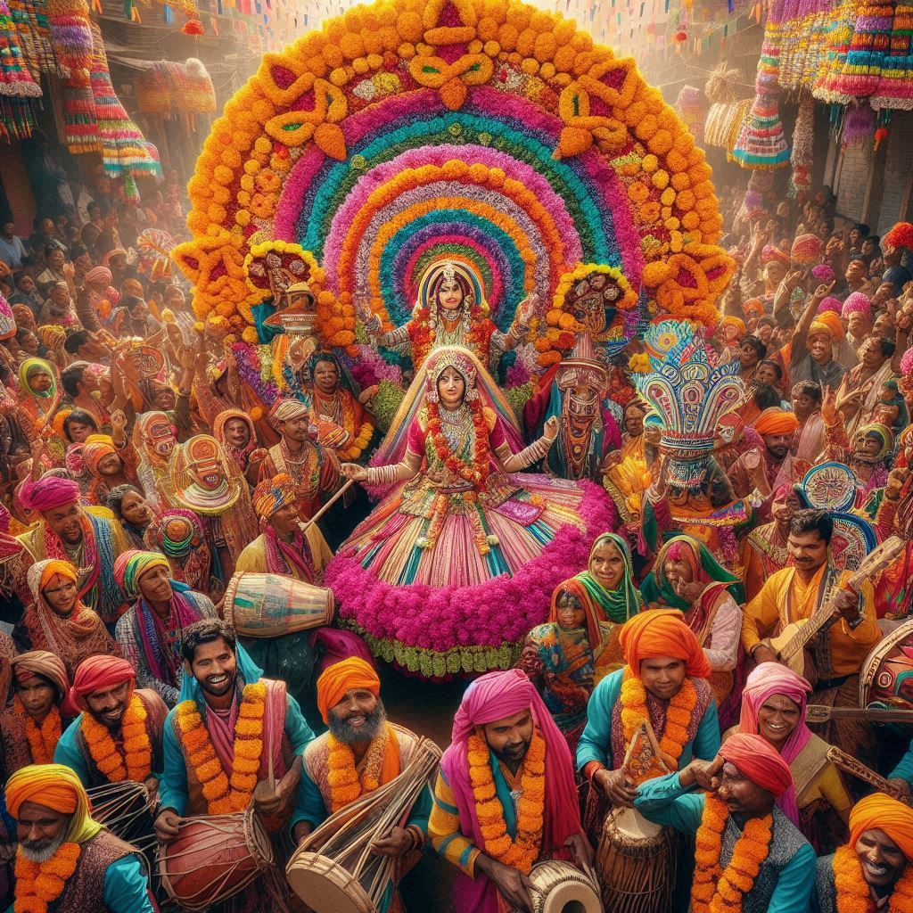

Jharkhand is known for its rich cultural heritage and vibrant festivals, which reflect the state's diverse tribal traditions and local customs. The festivals are deeply rooted in agricultural practices, nature worship, and traditional beliefs, often accompanied by music, dance, and community feasting. Here are some of the key festivals celebrated in Jharkhand:
1. Sarhul
- Significance: Sarhul marks the beginning of the New Year and celebrates the worship of trees and nature. The festival is dedicated to the Sal tree, which symbolizes the advent of spring and is important for tribal communities.
- Celebration: The festival includes rituals performed by village priests, offering flowers, grains, and local wine to the deities. People sing, dance, and perform traditional folk dances to celebrate nature’s bounty. Sarhul is observed with great enthusiasm by tribes like the Oraon, Munda, and Ho.
2. Karma Festival
- Significance: The Karma festival honors the Karam tree and is celebrated by various tribes, including the Oraon, Munda, and Santhal communities. It symbolizes fertility, prosperity, and community strength.
- Celebration: Villagers gather around a Karam sapling, offering prayers and performing rituals. Young men and women dance around the tree, accompanied by traditional songs and instruments. The festival represents hope, joy, and agricultural prosperity.
3. Tusu Parab
- Significance: Tusu Parab, or Tusu Festival, is a harvest festival celebrated during Makar Sankranti. It marks the end of the harvest season and is a time of joy and community gatherings.
- Celebration: People create decorated Tusu idols and immerse them in rivers or ponds. Villagers sing Tusu songs, and the festival is known for its processions and fairs. It is especially popular among tribal and rural communities.
4. Sohrai
- Significance: Sohrai is the harvest festival celebrated after the autumn rice harvest. It is dedicated to the welfare of cattle and marks the end of the agricultural season.
- Celebration: The festival involves decorating homes with Sohrai art, which features colorful murals of animals, nature, and tribal symbols. Rituals are performed for cattle, including anointing and feeding them special food. Villagers engage in singing, dancing, and community feasting.
5. Bhagta Parab
- Significance: Bhagta Parab, also known as Chhau Festival, is a festival celebrated with martial dances and acrobatic feats.
- Celebration: Villagers gather to perform the famous Chhau dance, a traditional dance form involving masks, martial arts moves, and theatrical elements. This festival showcases bravery, community spirit, and local folklore.


6. Jani Shikar
- Significance: This unique festival involves a traditional hunting ritual. Jani Shikar is celebrated by various tribes to honor their ancient hunting customs and traditions.
- Celebration: Participants dress in traditional attire, carry weapons like bows and arrows, and reenact hunting scenes in forests. It serves as a reminder of the tribes' connection to nature and their ancestral practices.
7. Hal Punhya
- Significance: Hal Punhya marks the beginning of the agricultural year. It is celebrated before plowing the fields and involves rituals for a good harvest.
- Celebration: Farmers worship their plows, cattle, and the earth to seek blessings for a bountiful harvest. Offerings and community prayers are an integral part of the festival.
8. Bandna Festival
- Significance: Bandna is another festival dedicated to cattle welfare and their importance in agriculture. It is widely observed by the Santhal community.
- Celebration: Cattle are bathed, painted, and decorated. They are also fed special meals as a sign of gratitude for their hard work. Villagers celebrate with music, dancing, and elaborate rituals.
9. Chhath Puja
- Significance: Although more popular in Bihar, Chhath Puja is widely celebrated in Jharkhand as well. It is dedicated to the worship of the Sun God and is observed with great reverence.
- Celebration: Devotees fast, offer prayers to the rising and setting sun, and perform rituals by rivers, lakes, or other water bodies. The festival involves strict discipline, bathing, and offerings of fruits, sweets, and other delicacies.
10. Other Festivals
- Makar Sankranti: Celebrated with kite flying, feasting, and community gatherings.
- Rath Yatra: Observed in some regions with grand processions and rituals.
- Phagua: The Jharkhand version of Holi, marked by colors, music, and dancing.
Jharkhand’s festivals showcase its vibrant tribal heritage and emphasize unity with nature, community bonding, and agricultural cycles. The blend of tribal, folk, and Hindu rituals reflects the cultural diversity and richness of the state.